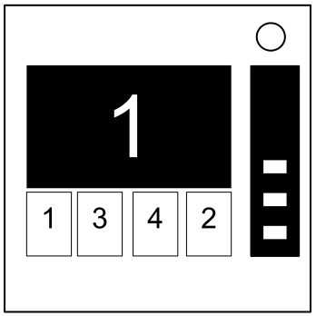
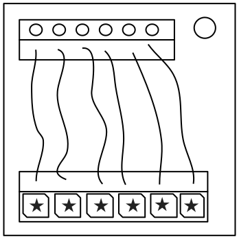

Keep Talking and Nobody Explodes v. 1
Introdui
Bonveni a la mundo perilosa e dur de desativi bombas.
Studia atendente esta manual; tu es la esperta. En estas pajes tu va trova tota ce tu debe sabe a desativi an la plu insidiosa de bombas.
E memori — Un nonotada peti e lo ta es finida!
[Nota par la traduidor:]
[Esta manual usa la revisa Engles de la jua.]
[Tu ia trova un era? Abri un bileta, per favor.]
Keep Talking and Nobody Explodes v. 1
Desativi Bombas
Desativi Bombas
Un bomba va esplode cuando sua retrocontador ateni 0:00 o cuando tro multe colpas es rejistrada. La sola modo a desativi un bomba es a desarma tota sua modulos ante sua retrocontador fini.
Bomba Esemplo
 Fronte |  Lado |
Modulos
Cada bomba va inclui asta 11 modulos cual debe es desativada. Cada modulo es separada e pote es desativada en cualce ordina.
Instruis per desativi modulos pote es trovada en Bloco 1. Modulos "Nesesosa" presenta un caso spesial e es descrivada en Bloco 2.
Colpas
Indicador de Colpa

Cuando la Desativador fa un era, la bomba ia rejistra un colpa, cual on ia mostra sur la indicador supera la retrocontador. Bombas con un indicador colpa va esploda sur la colpa tre. La retrocontador ia retroconta plus rapida seguente un colpa.
Si no indicador colpa es presente supra la retrocontador, la bomba va esploda sur thla colpa prima, ci permete no marjin per eras.
Colie Informa
Alga instruis desarma va esije informa spesifada sur la bomba, per esemplo la numero de serie. Esta tipo de informa pote tipal es trovada sur la alta, fondo, o lados de la caxa bomba. Vide Apendis A, B, e C per instruis de identifia cual va es usosa per desarma alga modulos.
Keep Talking and Nobody Explodes v. 1
Bloco 1: Modulos

Bloco 1: Modulos
Modulos pote es identifiada par un diodo de lus en la angulo alta destra. Cuando esta diodo es luminada verde, la modulo es desarmada.
Tota modulos debe es desarmada per desativi la bomba.
Keep Talking and Nobody Explodes v. 1
Filos

A Tema de Filos
Filos es la sangue de vive de electronica! Para, no, eletrica es la sangue de vive. Filos es plu como la arterias. La venas? Lo no importa…
- Un modulo filo pote ave 3-6 filos sur lo.
- Sola la un filo coreta debe talia per desarma la moduldo.
- La ordina de Filoscomensa con la prima de la alta.
| 3 filos:
Si on ave no filos roja, talia la filo du. Si no, alora si la filo ultima es blanca, talia la filo ultima. Si no, alora si on ave plu ca un filo blu, talia la filo blu ultima. En otra casos, talia la filo ultima. |
| 4 filos:
Si on ave plu ca un filo roja e la dijito ultima de la numero de serie es nonduable, talia la filo roja ultima. Si no, alora si la filo ultima es jala e on ave no filos roja, talia la filo prima. Si no, alora si on ave esata un filo blu, talia la filo prima. Si no, alora si on ave plu ca un filo jala, talia la filo ultima. En otra casos, talia la filo du. |
| 5 filos:
Si la filo ultima es negra e la dijito ultima de la numero de serie es nonduable, talia la filo cuatro. Si no, alora si on ave esata un filo roja e on ave plu ca un filo jala, talia la filo prima. Si no, alora si on ave no filos negra, talia la filo du. En otra casos, talia la filo prima. |
| 6 filos:
Si on ave no filos jala e la dijito ultima de la numero de serie es nonduable, talia la filo tre. Si no, alora si on ave esata un filo jala e on ave plu ca filo blanca, talia la filo cuatro. Si no, alora si on ave no filos roja, talia la filo ultima. En otra casos, talia la filo cuatro. |
Keep Talking and Nobody Explodes v. 1
La Boton
A Tema de La Boton
On ta pensa ce un boton ci dise tu a puia lo es alga fasil. Acel es la tipo de pensa cual esploda persones.
Vide Apendis A per un refere de identifia indicadores.
Vide Apendis B per un refere de identifia pilas.
Segue estas regulas en la ordina ce los es listada. Fa la ata prima cual pertine:
- Si la boton es blue e la boton dise "Abort" (aborta), puia e teni la boton e refere a "A Relasa un Boton Tenida".
- Si on ave plu ca 1 pila sur la bomba e la boton dise "Detonate" (Detona), puia e relasa direta la boton.
- Si la boton es blanca e on ave un indicador luminada con la eticeta CAR, puia e teni la boton e refere a "A Relasa un Boton Tenida".
- Si on ave plu ca 2 pilas sur la bomba e on ave un indicador luminada con la eticeta FRK, puia e relasa direta la boton.
- Si la boton es jala, puia e teni la boton e refere a "A Relasa un Boton Tenida".
- Si la boton es roja e la boton dise "Hold" (Teni), puia e relasa direta la boton.
- Si tota no de la casos supra pertine, puia e teni la boton e refere a "A Relasa un Boton Tenida"
A Relasa un Boton Tenida
Si tu comensa a puia e teni la boton, un banda colorida va lumina se sur la lado destra de la modulo. Seguente sua color, tu debe relasa la boton a un momento spesifada:
- Banda Blu: relasa cuando la retrocontador ave un 4 en cualce loca.
- Banda Blanca: relasa cuando la retrocontador ave un 1 en cualce loca.
- Banda Jala: relasa cuando la retrocontador ave un 5 en cualce loca.
- Banda de cualce otra color: relasa cuando la retrocontador ave un 1 en cualce loca.
Keep Talking and Nobody Explodes v. 1
Tecladoretas

A Tema de Tecladoretas
Me no es serta cual es estas simboles, ma me suspeta ce los conserna la oculta.
- Sola un colona a su ave tota cuatro de la simboles de la Tecladoreta.
- Puia la cuatro botones en la ordina ce sua simboles apare de alta a basa en acel colona.
 |  |  |  |  | | |||||
 | |  |  |  | | |||||
 |  |  |  | |  | |||||
 | |  |  |  |  | |||||
|  |  | | | | |||||
 | | |  |  |  | |||||
| | | |  |  |
Keep Talking and Nobody Explodes v. 1
Simon Dise

A Tema de Simon Dise
Esta es como un de la juetas ce on ia jua cuando on ia es un enfante, cual Tu debe egali la motif cual apare. Ma esta es un malcopia cual ia es comprada probable a un boteca descontante.
- Un de la cuatro botones colorida va flaxi.
- Par usa la table coreta a su, puia la boton con la color corespondente.
- La boton orijinal va flaxi, e un otra va segue. Repete esta segue en ordina par usa la mapa de colores.
- La segue va longi par un, a cada ves ce tu entra coreta un segue, asta la modulo es desarmada.
Si la numero de serie conteni un vocal:
| Flax Roja | Flax Blu | Flax Verde | Flax Jala | ||
|---|---|---|---|---|---|
| Boton a puia: | No Colpas | Blu | Roja | Jala | Verde |
| 1 Colpa | Jala | Verde | Blu | Roja | |
| 2 Colpas | Verde | Roja | Jala | Blu | |
Si la numero de serie no conteni un vocal:
| Flax Roja | Flax Blue | Flax Verde | Flax Jala | ||
|---|---|---|---|---|---|
| Boton a puia: | No Colpas | Blu | Jala | Verde | Roja |
| 1 Colpa | Roja | Blu | Jala | Verde | |
| 2 Colpas | Jala | Verde | Blu | Roja | |
Keep Talking and Nobody Explodes v. 1
Ci Vade Prima

A Tema de Ci Vade Prima
Esta macineta es como alga cosa de un comedia scetx, cual ta es comica si lo no ta es liada a un bomba. Me va es consisa, car parolas sola complica cosas.
- Leje la scermo e usa grado 1 a determina cual eticeta boton a leje.
- Par usa esta eticeta boton, usa grado 2 a determina cual boton a puia.
- Repete asta ce la modulo es desarmada.
Grado 1:
Seguente la scermo, leje la eticeta de boton spesifada e prosegue a grado 2:
|
|
|
|
|
| ||||||||||||||||||||||||||||||||||||||||||||||||
|
|
|
|
| |||||||||||||||||||||||||||||||||||||||||||||||||
|
|
|
|
|
| ||||||||||||||||||||||||||||||||||||||||||||||||
|
|
|
|
|
| ||||||||||||||||||||||||||||||||||||||||||||||||
|
|
|
| ||||||||||||||||||||||||||||||||||||||||||||||||||
Keep Talking and Nobody Explodes v. 1
Ci Vade Prima
Grado 2:
Par usa la eticeta de grado 1, puia la boton prima cual apare en sua lista corespondente:
READY: |
YES, OKAY, WHAT, MIDDLE, LEFT, PRESS, RIGHT, BLANK, READY, NO, FIRST, UHHH, NOTHING, WAIT |
|---|---|
FIRST: |
LEFT, OKAY, YES, MIDDLE, NO, RIGHT, NOTHING, UHHH, WAIT, READY, BLANK, WHAT, PRESS, FIRST |
NO: |
BLANK, UHHH, WAIT, FIRST, WHAT, READY, RIGHT, YES, NOTHING, LEFT, PRESS, OKAY, NO, MIDDLE |
BLANK: |
WAIT, RIGHT, OKAY, MIDDLE, BLANK, PRESS, READY, NOTHING, NO, WHAT, LEFT, UHHH, YES, FIRST |
NOTHING: |
UHHH, RIGHT, OKAY, MIDDLE, YES, BLANK, NO, PRESS, LEFT, WHAT, WAIT, FIRST, NOTHING, READY |
YES: |
OKAY, RIGHT, UHHH, MIDDLE, FIRST, WHAT, PRESS, READY, NOTHING, YES, LEFT, BLANK, NO, WAIT |
WHAT: |
UHHH, WHAT, LEFT, NOTHING, READY, BLANK, MIDDLE, NO, OKAY, FIRST, WAIT, YES, PRESS, RIGHT |
UHHH: |
READY, NOTHING, LEFT, WHAT, OKAY, YES, RIGHT, NO, PRESS, BLANK, UHHH, MIDDLE, WAIT, FIRST |
LEFT: |
RIGHT, LEFT, FIRST, NO, MIDDLE, YES, BLANK, WHAT, UHHH, WAIT, PRESS, READY, OKAY, NOTHING |
RIGHT: |
YES, NOTHING, READY, PRESS, NO, WAIT, WHAT, RIGHT, MIDDLE, LEFT, UHHH, BLANK, OKAY, FIRST |
MIDDLE: |
BLANK, READY, OKAY, WHAT, NOTHING, PRESS, NO, WAIT, LEFT, MIDDLE, RIGHT, FIRST, UHHH, YES |
OKAY: |
MIDDLE, NO, FIRST, YES, UHHH, NOTHING, WAIT, OKAY, LEFT, READY, BLANK, PRESS, WHAT, RIGHT |
WAIT: |
UHHH, NO, BLANK, OKAY, YES, LEFT, FIRST, PRESS, WHAT, WAIT, NOTHING, READY, RIGHT, MIDDLE |
PRESS: |
RIGHT, MIDDLE, YES, READY, PRESS, OKAY, NOTHING, UHHH, BLANK, LEFT, FIRST, WHAT, NO, WAIT |
YOU: |
SURE, YOU ARE, YOUR, YOU'RE, NEXT, UH HUH, UR, HOLD, WHAT?, YOU, UH UH, LIKE, DONE, U |
YOU ARE: |
YOUR, NEXT, LIKE, UH HUH, WHAT?, DONE, UH UH, HOLD, YOU, U, YOU'RE, SURE, UR, YOU ARE |
YOUR: |
UH UH, YOU ARE, UH HUH, YOUR, NEXT, UR, SURE, U, YOU'RE, YOU, WHAT?, HOLD, LIKE, DONE |
YOU'RE: |
YOU, YOU'RE, UR, NEXT, UH UH, YOU ARE, U, YOUR, WHAT?, UH HUH, SURE, DONE, LIKE, HOLD |
UR: |
DONE, U, UR, UH HUH, WHAT?, SURE, YOUR, HOLD, YOU'RE, LIKE, NEXT, UH UH, YOU ARE, YOU |
U: |
UH HUH, SURE, NEXT, WHAT?, YOU'RE, UR, UH UH, DONE, U, YOU, LIKE, HOLD, YOU ARE, YOUR |
UH HUH: |
UH HUH, YOUR, YOU ARE, YOU, DONE, HOLD, UH UH, NEXT, SURE, LIKE, YOU'RE, UR, U, WHAT? |
UH UH: |
UR, U, YOU ARE, YOU'RE, NEXT, UH UH, DONE, YOU, UH HUH, LIKE, YOUR, SURE, HOLD, WHAT? |
WHAT?: |
YOU, HOLD, YOU'RE, YOUR, U, DONE, UH UH, LIKE, YOU ARE, UH HUH, UR, NEXT, WHAT?, SURE |
DONE: |
SURE, UH HUH, NEXT, WHAT?, YOUR, UR, YOU'RE, HOLD, LIKE, YOU, U, YOU ARE, UH UH, DONE |
NEXT: |
WHAT?, UH HUH, UH UH, YOUR, HOLD, SURE, NEXT, LIKE, DONE, YOU ARE, UR, YOU'RE, U, YOU |
HOLD: |
YOU ARE, U, DONE, UH UH, YOU, UR, SURE, WHAT?, YOU'RE, NEXT, HOLD, UH HUH, YOUR, LIKE |
SURE: |
YOU ARE, DONE, LIKE, YOU'RE, YOU, HOLD, UH HUH, UR, SURE, U, WHAT?, NEXT, YOUR, UH UH |
LIKE: |
YOU'RE, NEXT, U, UR, HOLD, DONE, UH UH, WHAT?, UH HUH, YOU, LIKE, SURE, YOU ARE, YOUR |
Keep Talking and Nobody Explodes v. 1
Memoria

A Tema de Memoria
Memoria es un cosa frajil ma tal es tota cosas cuando un bomba esplode, donce atende bon!
- Puia la boton coreta per progresa la modulo a la paso segue. Completi tota pasos per desarma la modulo.
- Puia un boton noncoreta va reinisa la modulo a paso 1.
- Posas de botones es ordinada de sinistra a destra.
Paso 1:
Si la mostror es 1, puia la boton en la posa du.
Si la mostror es 2, puia la boton en la posa du.
Si la mostror es 3, puia la boton en la posa tre.
Si la mostror es 4, puia la boton en la posa cuatro.
Paso 2:
Si la mostror es 1, puia la boton cual es eticetada "4".
s Si la mostror es 2, puia la boton en la posa mesma como tu ia puia en paso 1.
Si la mostror es 3, puia la boton en la posa prima.
Si la mostror es 4, puia la boton en la posa mesma como tu ia puia en paso 1.
Paso 3:
Si la mostror es 1, puia la boton con la eticeta mesma como tu ia puia en paso 2.
Si la mostror es 2, puia la boton con la eticeta mesma como tu ia puia en paso 1.
Si la mostror es 3, puia la boton en la posa tre.
Si la mostror es 4, puia la boton cual es eticetada "4".
Paso 4:
Si la mostror es 1, puia la boton en la posa mesma como tu ia puia en paso 1.
Si la mostror es 2, puia la boton en la posa prima.
Si la mostror es 3, puia la boton en la posa mesma como tu ia puia en paso 2.
Si la mostror es 4, puia la boton en la posa mesma como tu ia puia en paso 2.
Paso 5:
Si la mostror es 1, puia la boton con la eticeta mesma como tu ia puia en paso 1.
Si la mostror es 2, puia la boton con la eticeta mesma como tu ia puia en paso 2.
Si la mostror es 3, puia la boton con la eticeta mesma como tu ia puia en paso 4.
Si la mostror es 4, puia la boton con la eticeta mesma como tu ia puia en paso 3.
Keep Talking and Nobody Explodes v. 1
Codigo de Morse

A Tema de Codigo de Morse
Un metodo anticin de comunica marinal? Cual seguente? An tal, lo es Codigo de Morse auntentica, donce atende bon e cisa tu ta aprende an alga cosa.
- Interprete la sinial de la lampeta flaxinte par usa la scema de Codigo Morse a spele un de la parolas en la table.
- La sinial va sicli, con un pausa longa entre repetes.
- Cuando la parola es identifiada, pone la frecuentia corespondente e puia la boton transmete (TX).
| Como Interprete |
|---|
|
1. Un flax corta representa un punto. 2. Un flax longa repsenta un linieta. 3. On ave un pausa long entre leteras.. 4. On ave un pausa multe longa ante la parola repete. |
 |
| Si la parola es: | Responde sur la frecuentia: |
|---|---|
| shell | 3.505 MHz |
| halls | 3.515 MHz |
| slick | 3.522 MHz |
| trick | 3.532 MHz |
| boxes | 3.535 MHz |
| leaks | 3.542 MHz |
| strobe | 3.545 MHz |
| bistro | 3.552 MHz |
| flick | 3.555 MHz |
| bombs | 3.565 MHz |
| break | 3.572 MHz |
| brick | 3.575 MHz |
| steak | 3.582 MHz |
| sting | 3.592 MHz |
| vector | 3.595 MHz |
| beats | 3.600 MHz |
Keep Talking and Nobody Explodes v. 1
Filos Complicada

A Tema de Filos Complicada
Estas filos no es como la otras. Algas ave bandetas! Acel sinifia ce los es completa diferente. La bon novas es ce nos ia trova un colie consisa de instruis sur cual a fa! Cisa tro consisa...
- Regarda cada filo: on ave un diodo de lus (DdL) supra la filo e un spasio per un simbol "★" su la filo.
- Per cada combina de filo/DdL/simbol, usa la scema Venn a su per deside egal o no a talia la filo.
- Cada filo pote es bandetosa con colores multiple.
| Filo ave color roja | |
 | Filo ave color blu o azul |
| Ave simbol ★ | |
| DdL es luminada |
| Letera | Instrui |
|---|---|
| C | Talia la filo |
| D | No talia la filo |
| S | Talia la filo si la dijito ultima de la numero de serie es duable |
| P | Talia la filo si la bomba ave un porto paralel |
| B | Talia la filo si la bomba ave du o plu pilas |
Vide Apendis B per un refere per identifia pilas .
Vide Apendis C per un refere per identifia portos.
Keep Talking and Nobody Explodes v. 1
Segues Filo

A Tema de Segues Filo
Lo es difisil a dise com esta macina opera. La injenia es alga impresante, ma on debe ia ave un modo plu fasil a maneja nove filos.
- Within this module there are several panels with wires on them, but only one panel is visible at a time. Switch to the next panel by using the down button and the previous panel by using the up button.
- Do not switch to the next panel until you are sure that you have cut all necessary wires on the current panel.
- Cut the wires as directed by the following table. Wire occurrences are cumulative over all panels within the module.
| Red Wire Occurrences | |
|---|---|
| Wire Occurrence | Cut if connected to: |
| First red occurrence | C |
| Second red occurrence | B |
| Third red occurrence | A |
| Fourth red occurrence | A or C |
| Fifth red occurrence | B |
| Sixth red occurrence | A or C |
| Seventh red occurrence | A, B or C |
| Eighth red occurrence | A or B |
| Ninth red occurrence | B |
| Blue Wire Occurrences | |
|---|---|
| Wire Occurrence | Cut if connected to: |
| First blue occurrence | B |
| Second blue occurrence | A or C |
| Third blue occurrence | B |
| Fourth blue occurrence | A |
| Fifth blue occurrence | B |
| Sixth blue occurrence | B or C |
| Seventh blue occurrence | C |
| Eighth blue occurrence | A or C |
| Ninth blue occurrence | A |
| Black Wire Occurrences | |
|---|---|
| Wire Occurrence | Cut if connected to: |
| First black occurrence | A, B or C |
| Second black occurrence | A or C |
| Third black occurrence | B |
| Fourth black occurrence | A or C |
| Fifth black occurrence | B |
| Sixth black occurrence | B or C |
| Seventh black occurrence | A or B |
| Eighth black occurrence | C |
| Ninth black occurrence | C |
Keep Talking and Nobody Explodes v. 1
Mazes

A Tema de Mazes
This seems to be some kind of maze, probably stolen off of a restaurant placemat.
- Find the maze with matching circular markings.
- The defuser must navigate the white light to the red triangle using the arrow buttons.
- Warning: Do not cross the lines shown in the maze. These lines are invisible on the bomb.


Keep Talking and Nobody Explodes v. 1
Passwords

A Tema de Passwords
Fortunately this password doesn't seem to meet standard government security requirements: 22 characters, mixed case, numbers in random order without any palindromes above length 3.
- The buttons above and below each letter will cycle through the possibilities for that position.
- Only one combination of the available letters will match a password below.
- Press the submit button once the correct word has been set.
| about | after | again | below | could |
| every | first | found | great | house |
| large | learn | never | other | place |
| plant | point | right | small | sound |
| spell | still | study | their | there |
| these | thing | think | three | water |
| where | which | world | would | write |
Keep Talking and Nobody Explodes v. 1
Section 2: Needy Modules

Section 2: Needy Modules
Needy modules cannot be disarmed, but pose a recurrent hazard.
Needy modules can be identified as a module with a small 2‑digit timer in the top center. Interacting with the bomb may cause them to become activated. Once activated, these needy modules must be tended to regularly before their timer expires in order to prevent a strike.
Stay observant: needy modules may reactivate at any time.
Keep Talking and Nobody Explodes v. 1
Venting Gas
A Tema de Venting Gas
Computer hacking is hard work! Well, it usually is. This job could probably be performed by a simple drinking bird pressing the same key over and over again.
- Respond to the computer prompts by pressing "Y" for "Yes" or "N" for "No".
Keep Talking and Nobody Explodes v. 1
Capacitor Discharge

A Tema de Capacitor Discharge
I'm going to guess that this is just meant to occupy your attention, because otherwise this is some shoddy electronics work.
- Discharge the capacitor before it overloads by holding down the lever.
Keep Talking and Nobody Explodes v. 1
Knobs

A Tema de Knobs
Needlessly complicated and endlessly needy. Imagine if such expertise were used to make something other than diabolical puzzles.
- The knob can be turned to one of four different positions.
- The knob must be in the correct position when this module's timer hits zero.
- The correct position can be determined by the on/off configuration of the twelve LEDs.
- Knob positions are relative to the "UP" label, which may have rotated.
LED Configurations
Up Position:
| X | X | X | |||
| X | X | X | X | X |
| X | X | X | |||
| X | X | X | X |
Down Position:
| X | X | X | |||
| X | X | X | X | X |
| X | X | X | |||
| X | X |
Left Position:
| X | |||||
| X | X | X | X |
| X | |||||
| X | X |
Right Position:
| X | X | X | X | X | |
| X | X | X | X |
| X | X | X | |||
| X | X | X | X |
X = Lit LED
Keep Talking and Nobody Explodes v. 1
Appendix A
Appendix A: Indicator Identification Reference
Labelled indicator lights can be found on the sides of the bomb casing.

Common Indicators
- SND
- CLR
- CAR
- IND
- FRQ
- SIG
- NSA
- MSA
- TRN
- BOB
- FRK
Keep Talking and Nobody Explodes v. 1
Appendix B
Appendix B: Battery Identification Reference
Common battery types can be found within enclosures on the sides of the bomb casing.
| Battery | Type |
|---|---|
 |
AA |
 |
D |
Keep Talking and Nobody Explodes v. 1
Appendix C
Appendix C: Port Identification Reference
Digital and analog ports can be found on sides of the bomb casing.
| Port | Name |
|---|---|
 |
DVI-D |
 |
Parallel |
 |
PS/2 |
 |
RJ-45 |
 |
Serial |
 |
Stereo RCA |